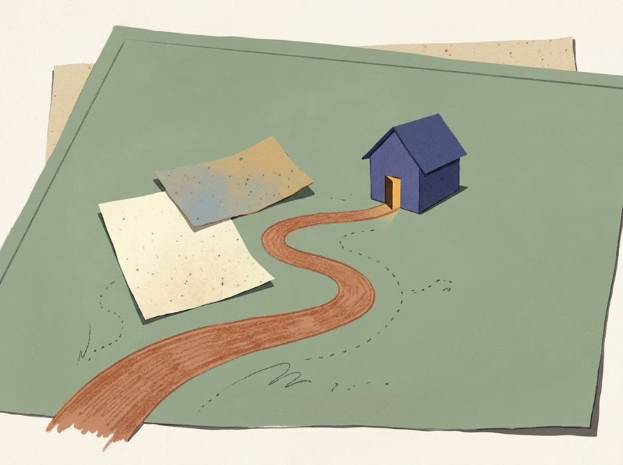

A wheel that needs a better place to roll. A spreadsheet that works until you drag the formula. I tend to stay with questions like that until I can make something useful out of them.
Lehigh mechanical engineering · Expected December 2026 Open to US remote work from January 2027
A year-long team capstone about turning a planetary gear assembly into a moving sculpture. My piece of the work includes the assembly CAD, mechanical revisions and materials planning.
The November 2 revision gives the outer ring a wider lane for the wheels. It also changes where the motor and supports have to sit.
Scroll to turn the model.Assembled sculpture · CAD camera orbit · Nov 2
02 / Cardinal Glass · Summers 2023, 2024, 2025
The spreadsheet was only half the problem.
I built an Excel macro tracker to bring files from an R&D line into one daily production view. The part I kept coming back to was figuring out what the numbers meant on the floor.
On a scorecard, I traced an average through the source workbook and realized the merged headers held dates, even though the first formula looked for a label. I got the calculation working, then found it broke when I dragged it across. That second check mattered.
Two other things I learned to check
On a material-loss tracking assignment, a partial run or glass still waiting for assembly could look like scrap if I only compared input with finished output. While checking filter airflow with a micromanometer and hood, I also asked what the measurement could actually tell us about filter condition.
03 / The software bench
Questions that turned into projects.
Operalith · Tools for ordinary work
Can five little tools feel like one place?
An earlier version explored how to make data handoffs easier to review. Today, Operalith is a workspace for life, school and solo work: a planner, project board, inventory, equipment loans, and customer enquiries.
Try the fictional club workshop. Its next task, original project and counted supplies are linked, so each thing still has a place of its own.
Browser-local demo. An invited solo pilot is separate.
Operalith as it looks today · fictional workspace
Midas · Research tooling
I want to know where a run went wrong.
In Midas I work on making runs reproducible and their failure reasons inspectable. On one November run, twenty control checks completed, then a domain assertion failed. The result stayed open for review. That’s the part I want a system to make easy to see.
AI-assisted development. Research tooling, no trading or deployment claim.
Keep the inputs.
Check the controls.
Make the failure visible.
Formsby · An earlier experiment
A search result isn’t always a useful answer.
I tried turning requests people were already posting into structured searches. An early run found a housing request and extracted what the person needed, then couldn’t find a valid match. A broad housing portal didn’t answer someone who needed an actual apartment.
That sent me back to separate the lead collection, matching and review steps. I wanted to connect people to resources that already exist.

Finding a door · illustration by Gemini
After hours / 01
SLOP
Scanned Leverage and Optimized Production. I use a Roblox game-building experiment to ask what can be reused from one build to the next. One piece is a Python placement tool with pinned inputs and tests for invalid configurations.
After hours / 02
EPOCH Atlas
Time travel raised a surprisingly practical question for me: if you change the date, where exactly do you arrive? I directed an AI-assisted prototype that uses real ephemeris data to make the choice of reference frame explicit. It’s still a work in progress.
A note from me
I build these because I get curious.
I’m finishing mechanical engineering at Lehigh. Some of these projects have been on my desk for a long time, and I like coming back to them with better questions. On the independent software work, I use AI assistance and focus on the direction, requirements and review.
I’m looking for remote work where I can keep doing that: designing systems, investigating failures, or making a process easier for the people using it.